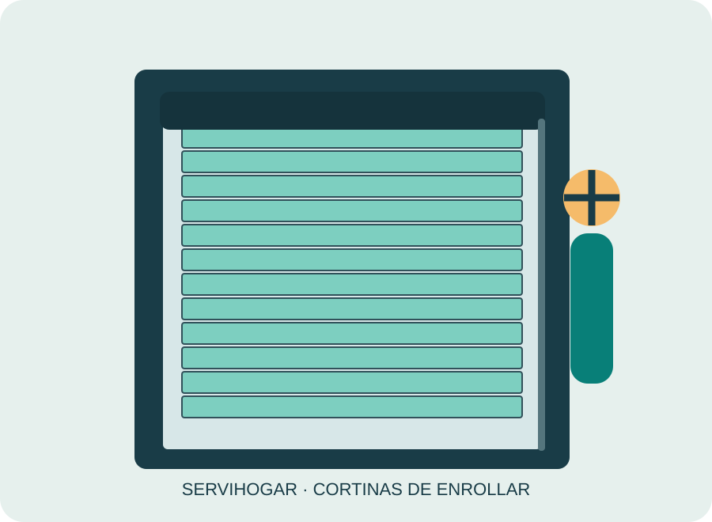

Reparación de cortinas de enrollar
Cortinas trabadas, descolgadas o que suben torcidas: evaluamos guías, ejes, lamas y mecanismos antes de proponer una reparación.
Ver detalles →Reparación de cortinas, cambio de cinta y barrotes e instalación de PVC y aluminio en Cordón, Montevideo. Presupuesto gratuito: 094 970 715.
☎ Llamar al 094 970 715WhatsApp
Si vivís o trabajás en Cordón y necesitás reparar una cortina de enrollar, podés consultar a Servihogar por el estado de la cinta, los barrotes, el eje o las guías. Atendemos solicitudes para propiedades con ventanas de diferentes tamaños y presupuestamos gratuitamente las tareas de reparación o instalación.
Entre los problemas por los que suelen consultar se encuentran cortinas antiguas de madera que necesitan una revisión cuidadosa. Antes de reemplazar una pieza, es importante identificar qué provocó la falla: una varilla que se engancha, por ejemplo, puede ser consecuencia de una guía desalineada y no solo de una pieza deteriorada.
También podés pedir un presupuesto para instalar una cortina nueva de PVC o aluminio en una abertura existente o en una reforma. Para orientarte necesitamos conocer el ancho y alto aproximados, si ya existe cajón y qué tipo de accionamiento tiene o tendrá la cortina. Si la cortina es de madera, consultanos por reparación y sustitución de varillas.
Realizamos cambio de cinta cuando se corta o se deshilacha, revisión del enrollador si no recoge correctamente y reemplazo de barrotes dañados. Evitá forzar la cortina si está trabada, porque el esfuerzo puede agravar el daño. Cada intervención se define de acuerdo con el mecanismo instalado.
Escribinos por WhatsApp o llamanos al 094 970 715 e indicá que necesitás servicio en Cordón. Podés enviar fotos y una breve descripción del problema. No trabajamos con cortinas roller ni verticales: nuestro servicio se concentra en cortinas de enrollar de PVC, aluminio y madera.
Cortinas trabadas, descolgadas o que suben torcidas: evaluamos guías, ejes, lamas y mecanismos antes de proponer una reparación.
Ver detalles →Sustituimos cintas desgastadas o cortadas y comprobamos el recorrido, el pasacintas y el enrollador.
Ver detalles →Reemplazamos barrotes o varillas deterioradas en cortinas de enrollar, verificando su encastre y desplazamiento.
Ver detalles →Instalamos cortinas nuevas en ventanas de viviendas, apartamentos y locales, con asesoramiento de medidas y materiales.
Ver detalles →Presupuestos gratuitos para cortinas de PVC nuevas, instalación y reparación de paños existentes.
Ver detalles →Cotizamos instalación y reparación de cortinas de aluminio para hogares y locales de Montevideo.
Ver detalles →